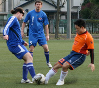

|
Horisaki Koen, Sunday 18th April.
Snow in April, a volcanic eruption and Spurs beating Chelsea; surely omens that something big was about to go down. It was. King George vs. Jets 2nds in Owada, with both teams knowing that first place in the league was at stake. The previous meeting ended in a 1-1 stalemate on cold evening back in December, would the third division’s frontrunners cancel each other out yet again?
The evening began with both teams watching the vacant Horisaki Koen pitch knowing full well that the draconian owners wouldn’t dream of letting them on the unused pitch until exactly ten minutes before the game. Finally, both teams were allowed on the pitch to take full advantage of the fine balmy evening by playing the world’s favourite sport (not Mexican greasy-boob fondling, the other one).
Jets kicked off at exactly 5:10pm, game on. There was a nervous energy that hung in the air like the flatulence of an elderly gentleman after too many Brussels sprouts. KGFC channeled that energy from start like an elderly gentleman after too many Brussels sprouts by applying pressure in dangerous areas. Early on, Jets had the possession while the George looked more dangerous on the break. A switch of play and a cunning dart in behind the full-back from Sean ‘Read ‘em and Weep’ Carroll, was an early statement of intent, on this occasion came to nothing.
King George looked more and more dangerous. Katsu ‘Anything You Can Do, I Can Do Better’ Miyagishi made himself a nuisance upfront, while some neat touches from ‘The’ Ben Steinson pushed the KGFC attack deeper into Jets’ territory. The back four, too, looked composed and calculated as they dealt with attack and long throws alike. Centre-backs John ‘Man Hill’ McGowan and Kenichi ‘Mmmmmm Nice’ Takayama were dominant in the air, showing levels of concentration akin to Garry Kasparov in a staring contest with Stephen Hawking.
A swift interchange on the left between Fernando ‘It Wasn’t Me, Ref’ Bermudez and Dan ‘Gurana-nator’ Bard lead to a delightful switch of play, the recipient was again Sean who this time shook off his marker like French Madam before smashing home with aplomb; the keeper, a mere spectator. What goal! What a guy! 1-0 KGFC, if there had been any fans watching they would have been ecstatic.
At the restart KGFC continued to be incisive on the counter whereas Jets arguably saw more of the ball and after a fine passage of play earned a corner. The set-piece was defended stoutly and cleared up field to Katsu who was standing about 35 yards from his own goal. Turning sharply he ran into the space ahead of him, clearly with only one thing on his mind… surely not? As the predatory Miyagishi galloped further into the Jets’ half jinking his way past oncoming defenders, the unthinkable looked evermore likely. Dan, from out of nowhere, blistered up field screaming for a pass, katsu ignored him. Leaving the final defender choking on the dust in his wake, the Japanese George Weah struck the ball as sweetly as a loving caress from the man himself. Goal of the season? 2-0 KGFC.
King George were looking good value for their lead and showed no signs of slowing down. Dan and Fernando linked up again on the left to send Katsu clear to cross for substitute and all-round gentleman Colin ‘Loch Lomond’ Cameron to tap in; bread and butter to a polygamist of Colin’s calibre. 3-0 the George and still ten minutes of the first-half to play.
The half ended with pressure from the Jets; rattling the crossbar once and forcing the cat-like reflexes of Bauer to pull off a Hollywood save that Jerry Bruckheimer himself would have purred at. Thankfully, for KGFC, the whistle blew for half time.
Captain Bates and his Benjamin Button-esque boyish good looks gave a half time team talk (after returning from the lav) that was full of superlatives yet demanded no lapses of concentration in the second half.
The second half was a master-class from the KGFC back four and Chris ‘The Hair’ Thomas didn’t even need to put a reducer on anyone… Tomoki ‘Calves Like Tanks’ Shiota protected the back four like several prophylactics and an elastic band during a busy trip to Thailand (Katsu), though not as messy afterwards. Substitute Alex ‘All or Nothing’ Zuspic deputised for Kenichi and proved invaluable in the air like an air hostess minus the fake tan.
The most hilarious point of the game came when Adam ‘Phil Colins, John Locke, Mickey Rooney, Kenny Baker’ McCann got kicked in the face. “Why me?” he was heard to cry, “Because you’re ugly!” replied one quick witted spectator, to which we all laughed a hearty laugh.
As the minutes ticked away neither keeper was particularly troubled and an incisive and determined display by KGFC was rounded off in time honoured fashion as the ref blew for full time. So, all change at the top of the league with three games to play. As this topsy-turvy season has been full of surprises I wouldn’t bet against another twist before all is said and done.
Report by Ben Steinson

|